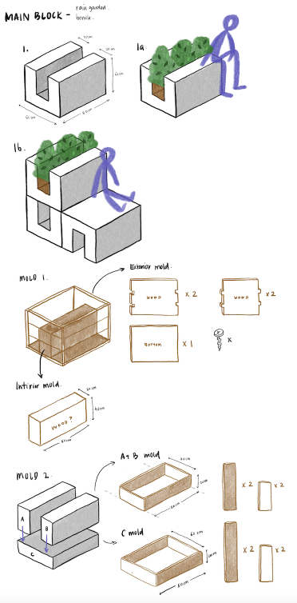
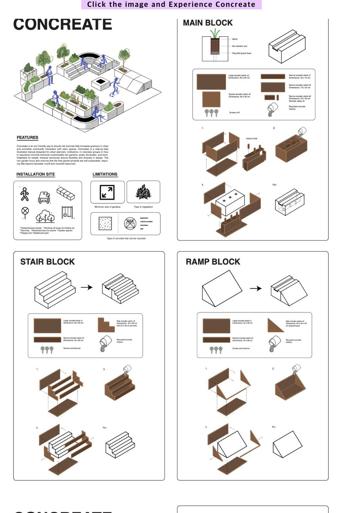

Concreate
A cookbook for Planetary Health
Team project in Common Design Studio
Role
Research
Ideation
Product Design
Ideation
Product Design
Project Time
2 weeks
Overview
Modern climate change is caused by human behaviour, namely the release of greenhouse gases. Accordingly People around the world are now realising the gravity of environment in these days. Concreate is an eco friendly way to recycle old concrete that increases greenery in cities and promotes community interaction with open spaces. Concreate is a step-by-step illustrated manual designed for urban planners, institutions, or volunteer groups on how to repurpose concrete and build customisable rain gardens, parks, blockades, and more.
Define
Brief
The Common Design Studio continues to address non-trivial issues that connect participants in different parts of the world through a concern for planetary health.
This project has a design-led focus on developing actionable strategies for a beneficial, sustainable, holistic relationship with the earth, its diverse peoples, its flora and fauna, addressing some of the documented risks to our interconnected ecologies. This project requires us to make cookbook for planetary health.
Approach
We approached this project by starting work in teams. We did collectively research and develop ideas that work toward creating positive futures made possible through knowledge sharing and design as a means of action. We created a convincing, compelling proposal clearly communicating our team's idea, the issue it addresses and the benefit it offers.
Research
Research Methods: Primary/Secondary Research, 1:1 Interviews, Online Survey

Since we were different university students in different countries, we usually used online tools such as Miro board and Discord for communication and progress.
We firstly gathered initial ideas about environment issues such as transport, deforestation, agriculture, pollution through Miro board.
After that, our team researched diverse ideas for planetary health separately and communicated with own primary research in order to find better idea and topic.
We firstly gathered initial ideas about environment issues such as transport, deforestation, agriculture, pollution through Miro board.
After that, our team researched diverse ideas for planetary health separately and communicated with own primary research in order to find better idea and topic.
After water, concrete is the most widely used substance in the world due to its versatility, resistance, accessibility, and other factors. Concrete brings a lot of problems like below;
- Cement production results in 8% global CO2 emissions - Damages most fertile layer of earth (topsoil) - soil erosion - Urban heat island effects and temperature increase
All this taken into consideration, we aimed to expand the research and ideas, and find alternative solutions.
- Cement production results in 8% global CO2 emissions - Damages most fertile layer of earth (topsoil) - soil erosion - Urban heat island effects and temperature increase
All this taken into consideration, we aimed to expand the research and ideas, and find alternative solutions.

"How can people or company made use of existing materials, but also actively benefited the environment?’
"To what extent do we need to narrow down the target users?”
Insight
A big issue proposed by the constant manufacturing of new concrete is of course disposal of old materials. Around 10 billion tonnes of concrete is produced each year. Over the next 40 years the world is expected to build 230 billion square metres in new construction, adding the equivalent of Paris to the planet every single week. In places like china, which produces more construction waste than any country, about 85% of the 2 million tonnes of concrete waste is unceremoniously dumped. It doesn’t even all make its way to official landfills, which don’t have the capacity to handle it, so almost half is disposed in unlicensed sites, or illegally tipped. Due to the fact that, It is important that finding ways to recycle old concrete that actively benefits the environment.
UX Challenge
Before we jump into the possible solutions, we wanted to clarify that our planetary cookbook entry will primarily be aimed at urban planning councils as opposed to individual people, since few people are actively involved in working with concrete. Our planetary cookbook will present solutions to councils, but also possibly voluntary organizations and schools, interested in creating a more environment-friendly cityscape and encouraging the community to interact with open spaces.
Design
Crazy 8s
After research and set the target, we did crazy 8s to get diverse and better ideas. We communicated and got two main points below;
There were two main buffers to excessive concrete production, and that was using green concrete alternatives, or concrete recycling. Our project focused on recycling existing concrete instead of creating new material. Currently much of the concrete that does get recycled is turned into low-value products like filling for roads. This is known as down-cycling. Our solutions will focus on instead up-cycling concrete to make better communities.
There were two main buffers to excessive concrete production, and that was using green concrete alternatives, or concrete recycling. Our project focused on recycling existing concrete instead of creating new material. Currently much of the concrete that does get recycled is turned into low-value products like filling for roads. This is known as down-cycling. Our solutions will focus on instead up-cycling concrete to make better communities.
Sketch and Design the Rain Garden

Promoting greenery in poorly maintained and/or impervious urban areas:
Turning construction rubble and other sources of concrete into “gravel”, which will then be used to store rainwater. A rain garden is, essentially, a bowl of soil dig into the pavement and converted to a small outdoor garden. This design provides multiple services to the community who decides to “invest” in it, as the plants in the garden help reduce air pollution in the area, it collects storm water runoff from the surrounding buildings and provides a relaxation area for the people living there.
If they were to plants trees in the rain garden then, the services could only be better as trees can improve air quality in direct and indirect ways. Indirectly, they can help by shading surfaces and reducing temperatures, and if buildings are shaded by trees, it reduces the need for conventional air conditioning, and the emissions of greenhouse gases that come with it. Plus, lower temperatures decrease risk of harmful pollutants like ground level ozone that commonly spike on hot days in urban areas.



Final Design
